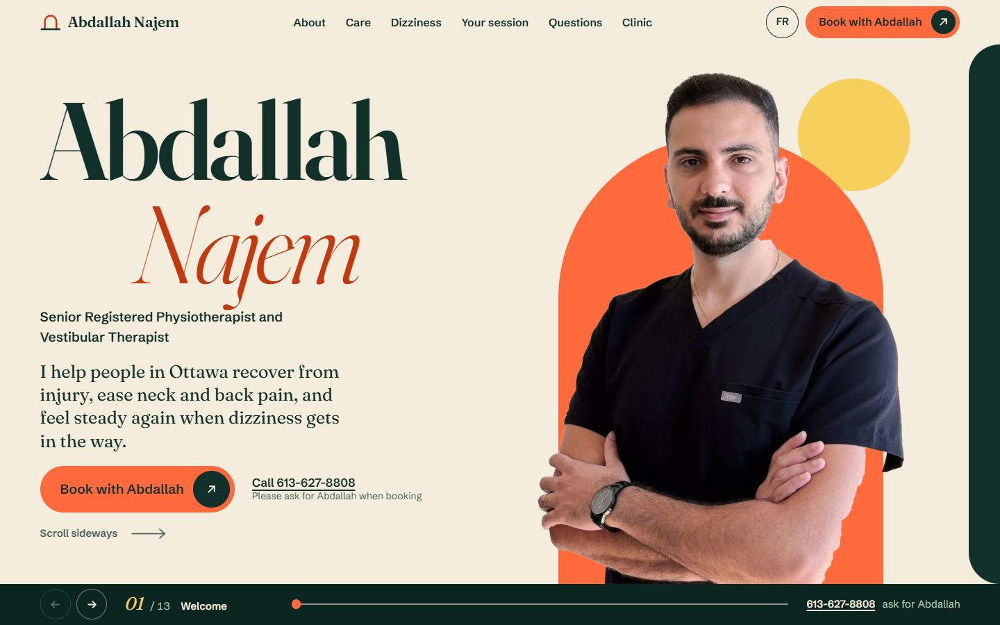

Five versions of the website
Open each one, scroll all the way down, and try it on a phone too. Each version also has a French switch in the top bar.
-
 Version 1 White and blue, with the waves. Name and portrait in the first screen, services that scroll sideways. Open version 1
Version 1 White and blue, with the waves. Name and portrait in the first screen, services that scroll sideways. Open version 1 -
 Version 2 Poster style on a stone background. “Ask for Abdallah” as the headline, with the portrait opening out of it. Open version 2
Version 2 Poster style on a stone background. “Ask for Abdallah” as the headline, with the portrait opening out of it. Open version 2 -
 Version 3 Version 1’s warmer opening and brand colours, redrawn, with version 2’s lower half. Open version 3
Version 3 Version 1’s warmer opening and brand colours, redrawn, with version 2’s lower half. Open version 3 -

Version 4 The whole site moves sideways. Cream, forest green, tangerine and butter yellow, with a serif typeface and a room that tilts as you travel. Open version 4 -
 Version 5 The boldest. Dark plum with lilac and lime, rings of type that turn around him, and service cards that stack. Open version 5
Version 5 The boldest. Dark plum with lilac and lime, rings of type that turn around him, and service cards that stack. Open version 5